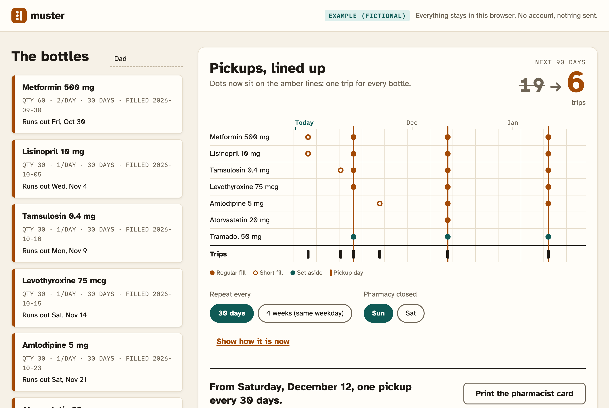
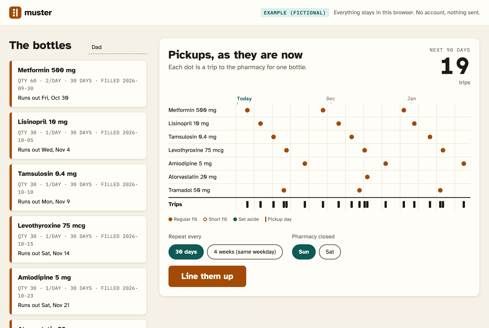
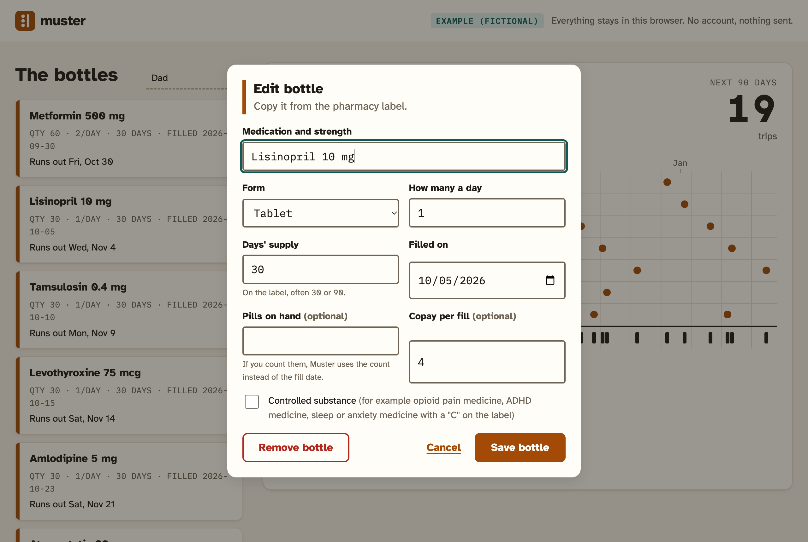
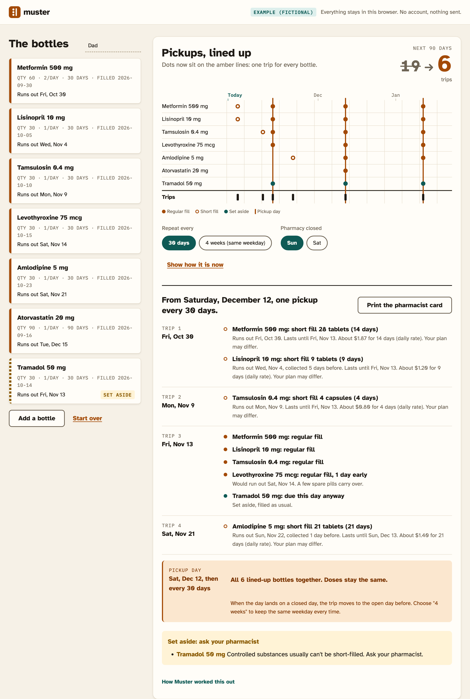
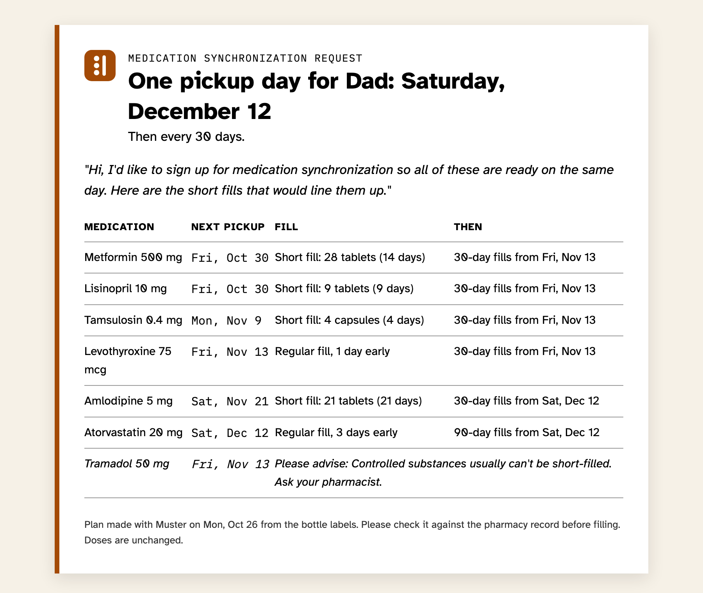

For whoever does the pharmacy runs
Six prescriptions, six pickup days. Muster makes it one.
Copy the dates off the bottle labels. Muster works out the one-time short fills that put every prescription on the same pickup day, then prints a card to hand your pharmacist.
Runs in your browser. No account. Nothing is sent anywhere.

A typical month
Saturday night. Dad says he's on his last metformin. You picked up his lisinopril on Tuesday and his thyroid pills the week before. The tamsulosin is due Monday. Every bottle was filled on a different day, so every bottle runs out on a different day. Next month it happens again.
Running out isn't a memory problem. It's calendar arithmetic.
Reminders tell you when the next bottle runs out. They can't make the bottles run out together. Pharmacies already can: it's called medication synchronization, one-time short fills that move every prescription onto one day. You just have to ask, and asking is a lot easier with the numbers in hand.
Before and after, same seven bottles

How it works
-
01
Copy each label
Name, how many a day, days' supply, fill date. If you count the pills left, Muster uses the count instead. Tick the box for controlled substances.

-
02
Press "Line them up"
Muster tries every possible pickup day, skips days the pharmacy is closed, and keeps the one with the fewest trips. Short fills due close together share a trip. Anything that shouldn't be split is set aside with the reason.

-
03
Hand over the card
One printed page: the pickup day, each short fill in tablets and days, the one sentence to say at the counter, and a note that the pharmacist checks it against their record. Doses never change.

What it doesn't do
- It isn't medical advice. It plans pickup dates. It never changes a dose, and the pharmacist has the final say.
- It only knows what you type. It doesn't connect to a pharmacy, a doctor or an insurer.
- Some bottles are set aside. Controlled substances, inhalers, pens, liquids, drops, patches, and supplies that don't fit the cycle.
- Early refills and copays are rules of thumb. It assumes a refill is allowed once about 80% is used, and estimates short-fill copays at a daily rate (required for Medicare Part D tablets and capsules; other plans vary).
- One person per plan, and no reminders. Bottles are saved only in this browser.
- Not yet tested with pharmacists or caregivers. The example household is made up.
Credits
Built for NextSpark Hacks 2026. Plain HTML, CSS and JavaScript; no frameworks, no trackers. Type: Atkinson Hyperlegible by the Braille Institute and IBM Plex Mono by IBM, both under the SIL Open Font License. Medication-sync background: the American Pharmacists Association's Appointment-Based Model; daily cost-sharing rule: 42 CFR 423.153(b)(4).
AI disclosure: designed and written with Claude Code (Anthropic). The AI wrote most of the code and copy under the entrant's direction; the entrant chose the problem, reviewed the plan logic and is responsible for the result. The planner itself uses no AI: every number is computed in your browser.